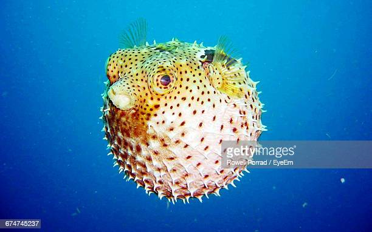

Pez Globo
Pez Globo

Los peces globos habitan en las aguas tropicales y subtropicales de todos los océanos, y a veces se internan en aguas templadas, pero nunca frías.
Les gusta nadar entre los arrecifes de coral y no suelen descender a profundidades por debajo de los 300 metros.
Características:
- Son peces sin escamas y suelen tener la piel áspera de punta.
- Todos tienen cuatro dientes que forman una forma de pico.
- Tienen un carácter muy agresivo
- El color del cuerpo de este pez puede variar dependiendo del tipo de especie nos encontremos pero de manera general, los peces globos son de color amarillo o verdosos con manchitas negras recubriendo todo el cuerpo.
- La dieta del pez globo incluye sobre todo animales invertebrados y algas.
Regresar al Inicio